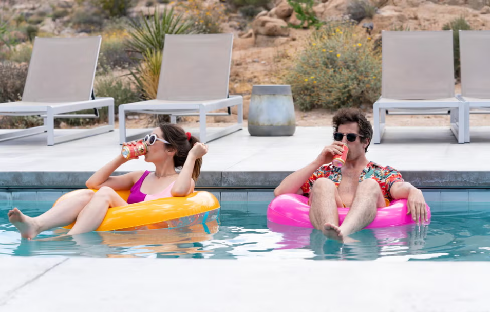
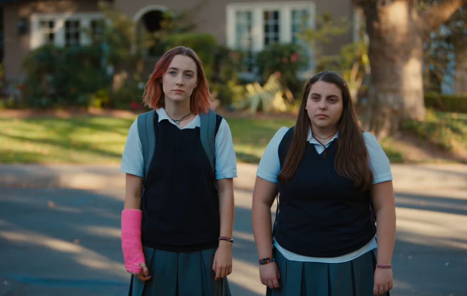
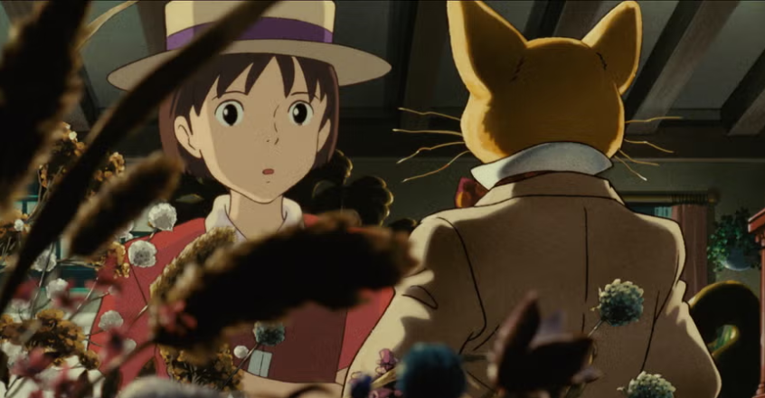

Palm Springs (Max Barbakow, 2020)

Esta comedia romántica de Max Barbakow es una maravilla infalible. Es divertida, es romántica, es original y sus protagonistas,
Andy Samberg y Cristin Milioti, no podrían ser más carismáticos. La historia nos sitúa en una boda que, por alguna razón, es
el centro de un bucle temporal en el que los dos protagonistas acabarán atrapados. Perfecta para los que hayan disfrutado con
películas con bucles temporales.
Lady Bird (Greta Gerwig, 2017)

La ópera prima de Greta Gerwig ('Mujercitas') fue este divertido, sensible y ruidoso retrato de la adolescencia femenina,
entre los amores tóxicos, las decepciones profesionales y los problemas domésticos. Saoirse Ronan encarna la desorientación de
toda una generación, con una especial mirada a las relaciones conflictivas entre madres e hijas. Sin duda, una de las mejores
películas adolescentes de todos los tiempos.
Susurros del corazón (Yoshifumi Kondô, 1995)

Aunque entre las mejores películas de Studio Ghibli siempre hablamos de 'La princesa Mononoke' o 'El viaje de Chihiro',
de Hayao Miyazaki e Isao Takahata, el estudio japonés tiene otras joyas que también merecen nuestra atención. Y ahí está '
Susurros del corazón', una hermosa historia sobre lo difícil que es cumplir los sueños.